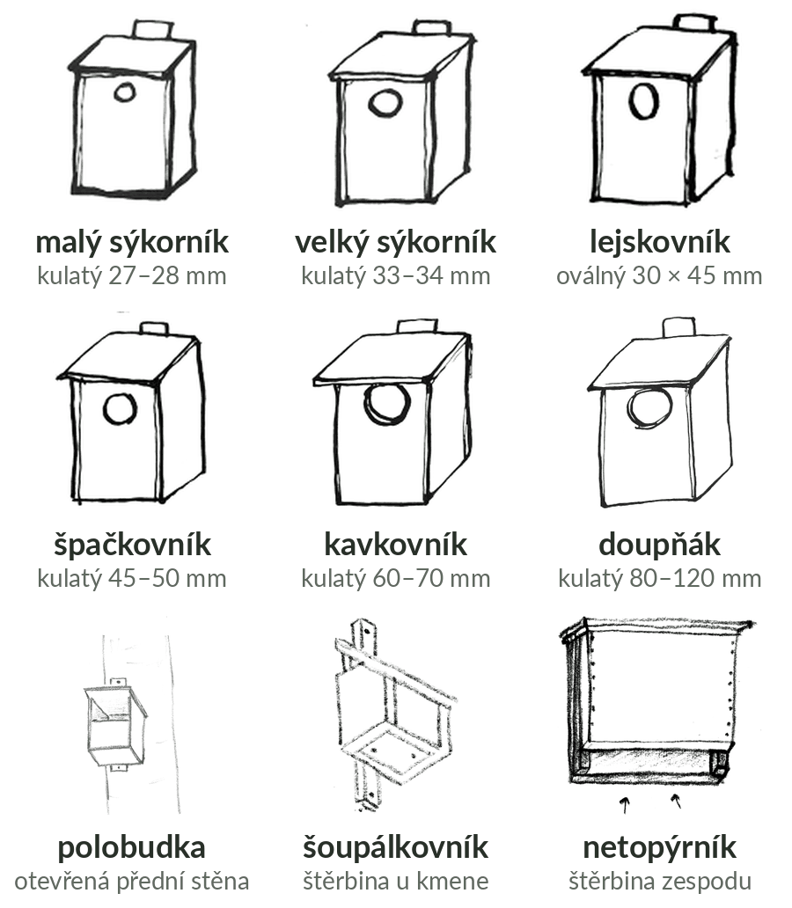

Typ budky říká, pro koho je postavená. Poznáš ho hlavně podle vletového otvoru, vnitřní rozměry se u visící budky měří špatně. Kdo v budce doopravdy bydlel, se zapisuje zvlášť, v kontrole.

Klasická budka ve tvaru kvádru s otvorem v přední stěně. Typy se liší jen velikostí otvoru a vnitřku. Rozsahy otvorů jsou z brožur Hnutí Brontosaurus, aplikace typ navrhne i pro otvory mezi nimi, viz Měření otvoru.
Typ | Otvor | Kdo v ní hnízdí |
|---|---|---|
malý sýkorník | 27–28 mm | modřinka, uhelníček, parukářka. Koňadra se do něj nevejde, takže je nevyžene |
velký sýkorník | 33–34 mm | nejčastěji koňadra, dále sýkora lužní a babka, lejsci, rehek zahradní, brhlík, vrabci, krutihlav |
lejskovník | oválný 30 × 45 (50) mm | lejsci, rehek zahradní, brhlík, výjimečně sýkory |
špačkovník | 45–50 mm | špaček, větší sýkory, brhlík, strakapoudi, krutihlav, lejsci, rehek zahradní |
kavkovník | 60–70 mm | kavka, dudek, žluny, strakapoudi |
doupňák | 80–120 mm | holub doupňák, hohol, poštolka, občas kavka nebo některé sovy |
sovinec | nad 120 mm | větší sovy, třeba puštík |
Otvor zabírá čtvrtinu až polovinu přední stěny, vnitřek má asi 12–14 cm. Bydlí v ní rehek domácí, lejsek šedý nebo konipasy. Věší se pod střechy budov, na ploty a stromy, pro konipasy u potoků nízko nad vodou. Neotvírá se, staré hnízdo se vybere otvorem.
Ty aplikace podle otvoru nenavrhne, vyber je ručně:
Nevíš, jaký je to typ? Nech ten, který aplikace navrhla podle otvoru, a budku vyfoť. Správce oblasti to doladí.
Nejmenší vnitřní rozměry podle brožury Ptačí budky. Plánky s rozměry všech dílů má brožura Výroba ptačích budek, odkazy jsou ve Zdrojích.
Typ | Dno | Hloubka dutiny |
|---|---|---|
malý sýkorník | 12 × 12 cm | 20–25 cm |
velký sýkorník | 12 × 14 cm | 20–25 cm |
lejskovník | 14 × 14 cm | 18–20 cm |
špačkovník | 15 × 15 cm | 25–30 cm |
kavkovník | 20 × 20 cm | 35 cm |
doupňák | 30 × 30 cm | 40 cm |